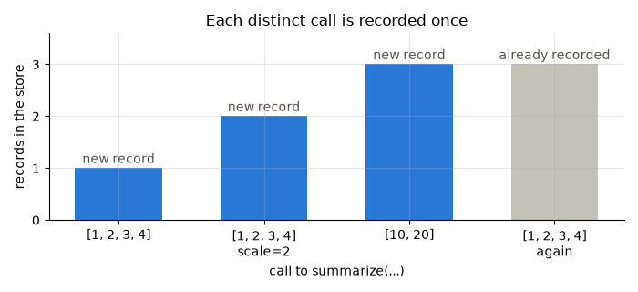

Note
Go to the end to download the full example code.
record_func : recording a first call¶
record_func needs two things: a function, and somewhere to keep its history.
While recording is switched on, each distinct set of arguments the decorated function is called with is written to disk as a regression record: what went in, and what came out. Nothing else about the function changes - arguments arrive untouched, the return value passes through.
Recording is half of the job. The other half is replay: later, after the code or
its environment has changed, it calls the function again on every recorded input and
reports whether it still gives the recorded answer.
Setup: where records go¶
A recorded function writes its records to a store, a directory. Where that directory is depends on who runs the code - your checkout, a colleague’s, a CI job - so it is configuration, not code: the code reads it from an environment variable when it is imported, and whoever runs it sets the variable. Set it first, before importing anything that records.
import os
import tempfile
from pathlib import Path
# In a project, set it once in a .env file at the repository root, naming the store you
# commit:
#
# REGRESSION_RECORDS_STORE=tests/regression_data
#
# and load that file first thing in each entry point - a script, a notebook, or
# tests/conftest.py - with python-dotenv (pip install python-dotenv):
#
# from dotenv import load_dotenv
# load_dotenv()
#
# A relative path is resolved from the directory the code runs in, so run from the
# repository root, or make it absolute. A CI job sets the same variable in its
# environment instead. The name is your project's choice; regression_records itself
# never reads it.
#
# This page sets it to a fresh temporary directory, so no earlier run's records are in
# the store.
STORE = Path(tempfile.mkdtemp(prefix="regression-records-"))
os.environ["REGRESSION_RECORDS_STORE"] = str(STORE)
print("store:", STORE)
store: /tmp/regression-records-is7qrnxh
Setup: the code under test¶
Replay finds a recorded function again by importing it by module and name, so the code
under test has to live in a module. A function defined on this page belongs to
__main__, which cannot be imported again, and decorating one there raises
TypeError. In your project that module is your own package; here the page imports
one, stats, from regression_records._examples - support code that ships with
the package so that a page can import real code rather than define it in a cell. It is
not public API and may change without notice.
Its whole source is printed below. Every page imports its code the same way and prints the parts it uses, so what a page calls is always on the page.
record_func takes the store as its one required argument. There is no default
location, because recording somewhere implicit would be worse than being asked; the
module passes the path it read from REGRESSION_RECORDS_STORE in the cell above.
import inspect
import json
from regression_records._examples import stats
print(inspect.getsource(stats))
"""Summary statistics, for the gallery page ``01_first_record``."""
from __future__ import annotations
import os
import numpy as np
from regression_records import record_func
# Where records go is configuration, set by whoever runs this code; never set here.
STORE = os.environ["REGRESSION_RECORDS_STORE"]
@record_func(STORE)
def summarize(values: list[float], *, scale: float = 1.0) -> dict:
"""Return the size, mean and scaled values of ``values``."""
scaled = np.asarray(values) * scale
return {"n": int(scaled.size), "mean": float(scaled.mean()), "values": scaled}
def show_tree(root: Path) -> None:
"""Print every file in the store, relative to its root."""
for path in sorted(root.rglob("*")):
if path.is_file():
print(" ", path.relative_to(root))
Switch recording on¶
Recording is off unless switched on, so a decorated function costs one check per call and the decorator can stay on production code. The usual switch is the environment variable, for the one run that should record:
REGRESSION_RECORDS=1 python run_pipeline.py
From Python, enable() does the same. This page switches recording on for the whole
script; REGRESSION_RECORDS : switching recording on and off covers the
switch in full.
from regression_records import enable, replay
enable()
Call it¶
{'n': 4, 'mean': 2.5, 'values': array([1., 2., 3., 4.])}
What landed on disk¶
One JSON record, plus a side file for the array. Arrays and dataframes are too big and too binary to sit inside JSON, so they are written next to it and referenced by a relative path - which is what lets the whole directory be moved or copied as a unit.
show_tree(STORE)
regression_records/_examples/stats/summarize/data/arr-51fad5d2b4d699a43450eb016c9c7d36.npy
regression_records/_examples/stats/summarize/records/rec-cf3ebcb7156a5b90-ac0954ed.json
The directory path is the function’s identity: its module, then its qualified name.
stats.summarize is filed under regression_records/_examples/stats/summarize/.
record_path = next(STORE.rglob("rec-*.json"))
record = json.loads(record_path.read_text())
print(
json.dumps(
{k: record[k] for k in ("identity", "input_hash", "invocation", "output")},
indent=2,
)
)
{
"identity": {
"code_hash": "3e9b70a1a8768f31",
"kind": "function",
"module": "regression_records._examples.stats",
"qualname": "summarize",
"signature": "(values: 'list[float]', *, scale: 'float' = 1.0) -> 'dict'"
},
"input_hash": "cf3ebcb7156a5b90d026f622fa71b502e13d9c36721229f9f859a04eaca72575",
"invocation": {
"args": [
[
1.0,
2.0,
3.0,
4.0
]
],
"kwargs": {
"scale": 1.0
}
},
"output": {
"mean": 2.5,
"n": 4,
"values": {
"__type__": "numpy.ndarray",
"dtype": "float64",
"path": "../data/arr-51fad5d2b4d699a43450eb016c9c7d36.npy",
"shape": [
4
]
}
}
}
Worth noticing in that JSON:
invocation.argsandinvocation.kwargshold the arguments after binding them to the signature.scalewas never passed, but it is recorded as1.0, so replay calls the function exactly as it was called, default included.input_hashis a sha256 over that normalized argument tree. It is the leading part of the record’s filename, so the records of one call sit together.identity.code_hashhashes the function’s source. It is recorded but is not part of the filename: editing the function does not orphan its history, and replay reports the edit as code drift instead (replay : exceptions and code drift in the report).
assert record["invocation"]["kwargs"]["scale"] == 1.0
assert record_path.name.startswith(f"rec-{record['input_hash'][:16]}")
One record per distinct call¶
A function accumulates one record per distinct invocation. A call repeated with the same arguments is the same case, and writes nothing.
calls = [
([1.0, 2.0, 3.0, 4.0], {"scale": 2.0}),
([10.0, 20.0], {}),
([1.0, 2.0, 3.0, 4.0], {}), # the very first call again
]
records_after = [len(list(STORE.rglob("rec-*.json")))]
for values, kwargs in calls:
stats.summarize(values, **kwargs)
records_after.append(len(list(STORE.rglob("rec-*.json"))))
assert records_after == [1, 2, 3, 3]
show_tree(STORE)
regression_records/_examples/stats/summarize/data/arr-2554b23368c1c28529c368652ceaee1c.npy
regression_records/_examples/stats/summarize/data/arr-51fad5d2b4d699a43450eb016c9c7d36.npy
regression_records/_examples/stats/summarize/data/arr-8a6bfa9a302acad7eed08139bb357ea3.npy
regression_records/_examples/stats/summarize/records/rec-0d894cc2e52ee507-cd308dea.json
regression_records/_examples/stats/summarize/records/rec-94836597b269bbbd-5a40bae8.json
regression_records/_examples/stats/summarize/records/rec-cf3ebcb7156a5b90-ac0954ed.json
Four calls, three records: the repeat added nothing.
import matplotlib.pyplot as plt
labels = ["[1, 2, 3, 4]", "[1, 2, 3, 4]\nscale=2", "[10, 20]", "[1, 2, 3, 4]\nagain"]
new = [b - a for a, b in zip([0, *records_after], records_after, strict=False)]
fig, ax = plt.subplots(figsize=(7.0, 3.2))
ax.bar(
labels,
records_after,
color=["#2a78d6" if n else "#c3c2b7" for n in new],
width=0.6,
)
for x, (total, added) in enumerate(zip(records_after, new, strict=True)):
ax.annotate(
"new record" if added else "already recorded",
(x, total),
xytext=(0, 4),
textcoords="offset points",
ha="center",
color="#52514e",
)
ax.set_ylabel("records in the store")
ax.set_xlabel("call to summarize(...)")
ax.set_yticks(range(4))
ax.set_ylim(0, 3.6)
ax.set_title("Each distinct call is recorded once")
fig.tight_layout()

Replaying the records¶
replay walks the store. For each record it imports the function by its recorded
name, calls the function beneath the decorator on the recorded arguments, and compares
what comes back with what was recorded. Nothing is written: replay only reads.
Nothing has changed since the recording, so every case passes.
report = replay(STORE)
print(report.summary())
for case in report.cases:
print(f" {case.status.value:<8} {case.name} record {case.record_id[:8]}")
replayed 3 record(s) from /tmp/regression-records-is7qrnxh: 3 passed
passed regression_records._examples.stats:summarize record cd308dea
passed regression_records._examples.stats:summarize record 5a40bae8
passed regression_records._examples.stats:summarize record ac0954ed
report.passed is the one-line verdict, the thing a test asserts on:
assert report.passed, report.summary()
assert report.counts()["passed"] == 3
Next: replay : catching a regression breaks the code and reads the failure.
Total running time of the script: (0 minutes 1.547 seconds)